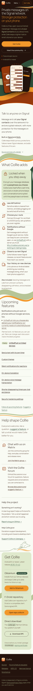
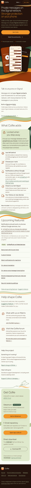
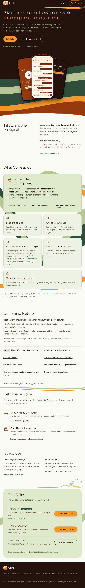
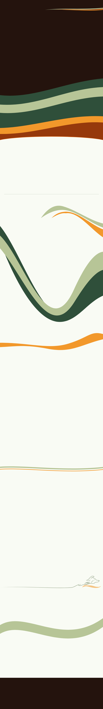
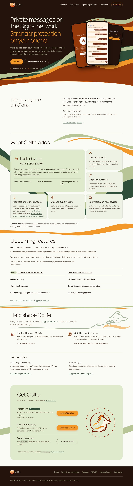
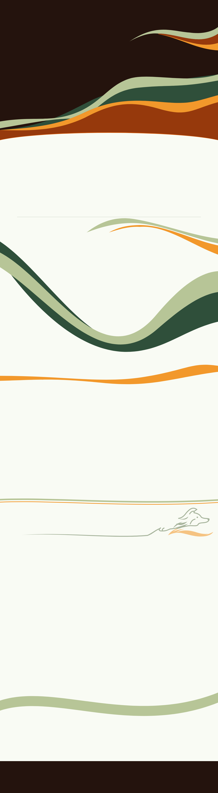
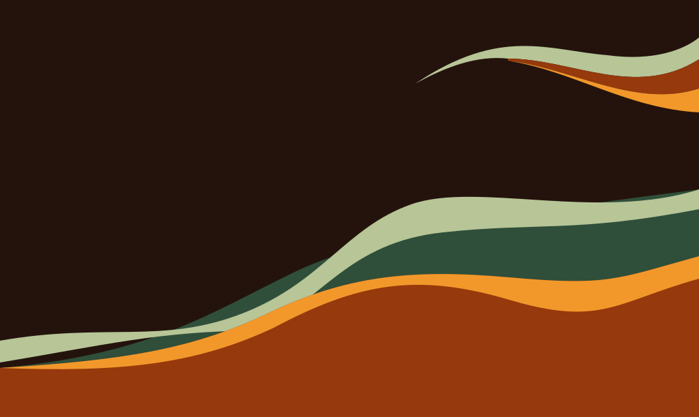
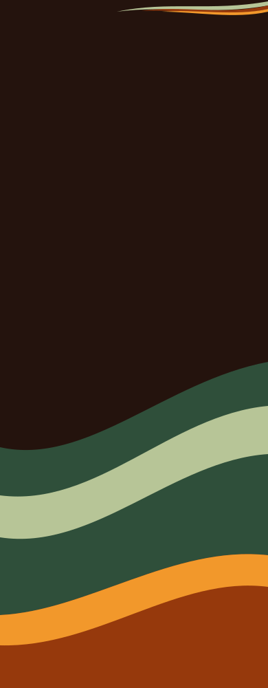
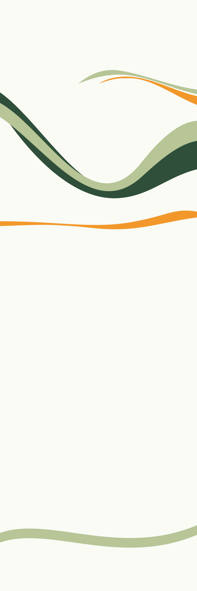
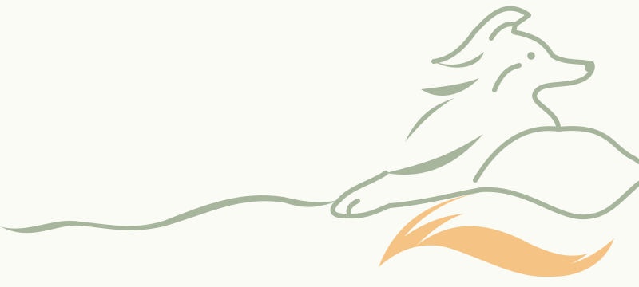
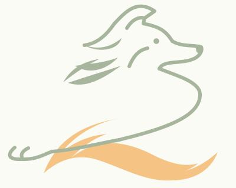
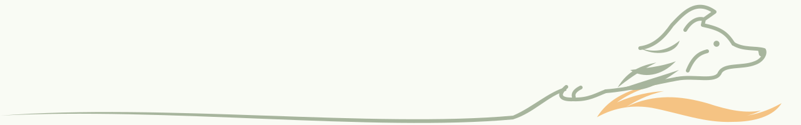
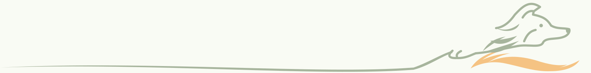
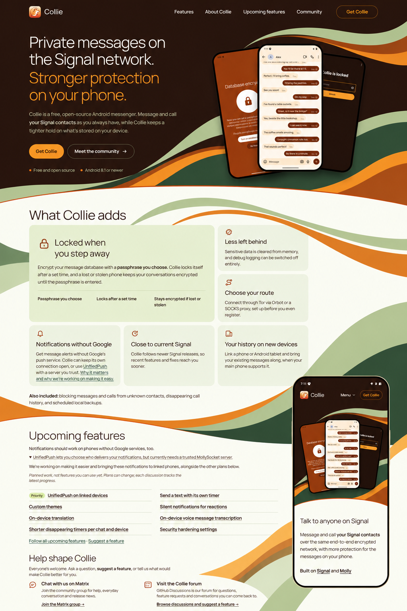
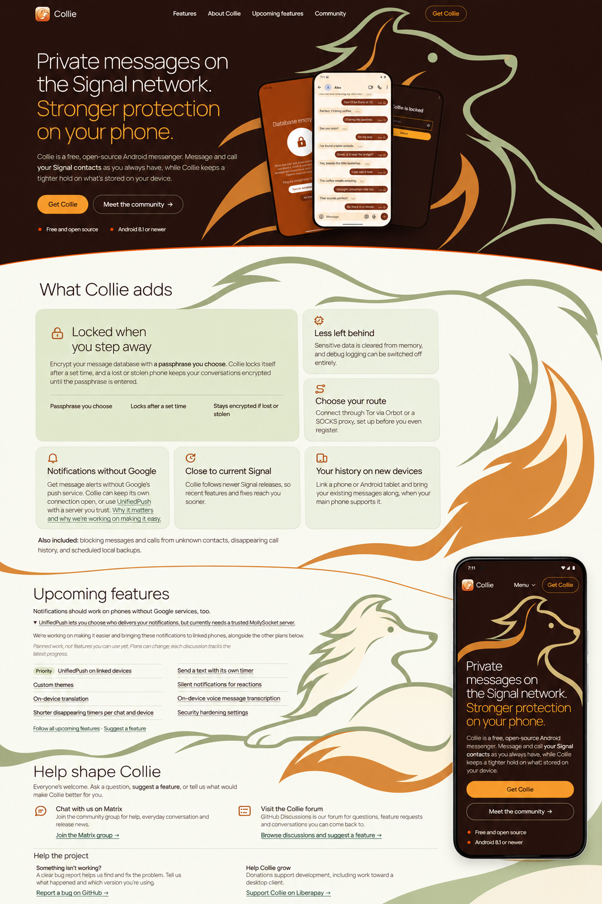
Current artwork ccfc2ec3. Drag or scroll to inspect the complete page; both foreground states share coordinates. Inspect the isolated canvases too: no cards or phones can conceal broken paths there.
Actual page images are stitched native top/lower browser source renders, not single screenshots. All eight overlaps match exactly. Isolated SVGs are direct native-aspect rasters. The mural is a single 56% composite; real foreground reading surfaces protect text and disappear with foreground-off. Reference AI foreground/insets and hidden regions are not measurable tracing targets.